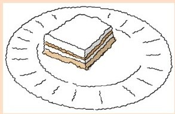
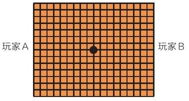
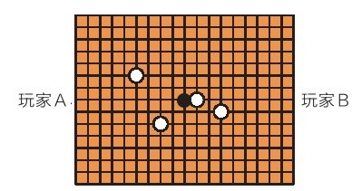
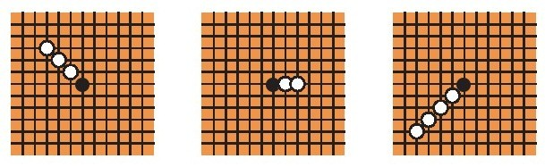
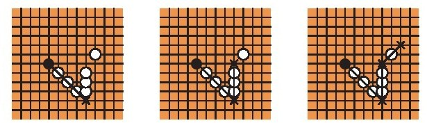
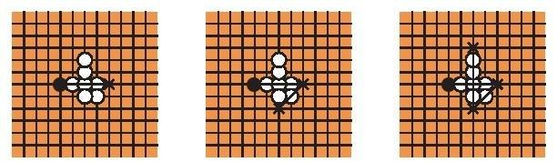
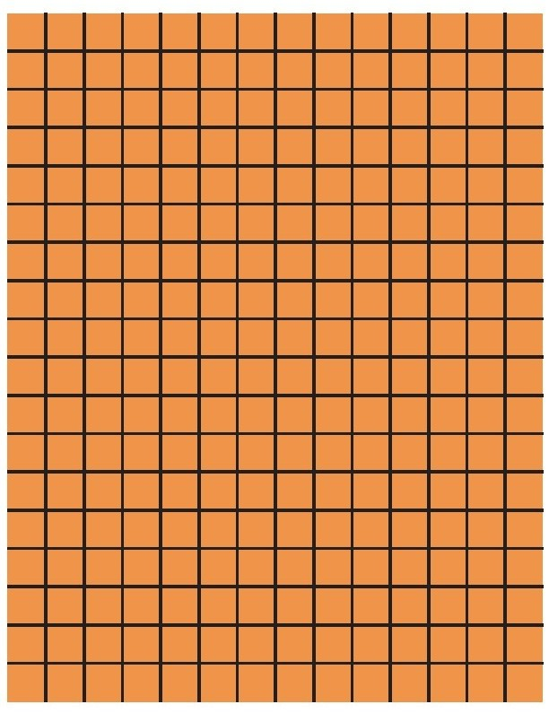

数学和美食学在经济节约方面都有一点值得欣赏，那就是以最省力的方式完成要做的事情。
厨房中的经济节约
我略经查究就发现：
有6本烹饪书专门介绍使用6种以下食材的食谱。
有3本烹饪书专门介绍使用5种以下食材的食谱。
有4本烹饪书专门介绍使用4种以下食材的食谱。
有14本烹饪书专门介绍使用3种以下食材的食谱。
有1本烹饪书介绍了只使用2种食材的食谱。
这类书主要吸引人之处在于承诺提供快速、容易准备的制作方法。然而除了方便，还有经济节约这一点值得欣赏。一道菜一目了然，整洁利落，只有几个主要成分诚实地摆在盘子里。
我看过的烹饪书大部分提供简单、快速的食物制作方法，但罗珊·戈尔德的烹饪书却不同。她证明很多菜肴是通过减少食材数量提升口感味道的。她在自己的《菜谱1-2-3：仅用3种食材做出难以置信的美食》中写道：
如今，当我们面对餐桌上那些由主厨做出的过度考究的菜肴时，因信任主厨手艺而期待品尝到的、富有层次的味道通常是体会不到的，相反，倒是有令人分辨不清的味道掩盖了食材基本的风味[48]。
戈尔德的菜谱未必简单。在她做的那些令人印象深刻的菜肴里，味道的细微差别和复杂性是从经历时间和艺术加工的简单材料中提取出来的。
在她的“烤箱热煨芦笋，炸酸豆”菜谱中有一个可爱的例子。以260℃的高温热煨中等大小的芦笋叶片，持续8分钟，淋上橄榄油，撒上盐，然后和经过橄榄油油炸的大酸豆一起装盘上桌。对芦笋和酸豆不同寻常的烹饪过程强化了两者的味道。
盐、胡椒和水不算食材。这样似乎很公平，尤其是对盐和水来说。但是，胡椒给菜肴加入了自己的味道。说到这一点，到底什么是“食材”？戈尔德在此提出了一些相当复杂的混合物：蛋黄酱、香蒜沙司、中国五香粉、小牛肉香肠、奶酪芝麻菜饺子、清鸡汤，等等。
说到成分的简单性（只有4种），我对菲律宾一种叫“非凡”的甜点倾慕已久。它是西班牙和菲律宾饮食风味相结合的产物，是一种亚洲蛋白酥皮奶油蛋糕。这是一种无比美味的甜点，应该有更多的人知道。
非凡
千层糕的制作
8个蛋白
1杯糖，加上
1½杯细磨腰果（用咖啡研磨机）
铝箔纸
用于涂抹分层的黄油
用涂了黄油的铝箔纸将三个烤盘覆盖住。打发蛋白直至其变成最柔软的状态。打发蛋白的时候放入1～2茶匙糖。加入细磨过的腰果，将混合物一层一层铺在三个涂了黄油的铝箔纸上。每一层都铺在另一层的上面，这样它们的大小和形状会比较接近。我只铺了几层，测出每个的大小为13英寸×9英寸。每一层的厚度应该是均匀的，这样都可以均匀受热（并且每一个部分都应该是脆脆的）。
以120摄氏度的温度烘烤，直至全部变成金黄色。这可能会用掉一个半小时。烤好后冷却，然后将铝箔纸轻轻地从千层糕上剥离[49]。
如果千层糕破了也没什么。将最好的那层放在上面就可以了。
奶油乳酪的制作方法：
8个蛋黄
杯糖
2条无盐黄油
1个双层锅
一个搅拌器
鸡蛋取蛋黄。
将糖放入双层锅上面那一层里，加入3汤匙水。将水和糖加热至115摄氏度（直接高温加热就可以做到）。让其冷却1～2分钟。然后在大力打发蛋黄的过程中将糖浆以小细流的状态倒入蛋黄中。将双层锅架好，底层锅中放入½英寸深的水。在上层锅中对糖和蛋黄的混合物进行加热，用木勺搅拌，直至混合物变厚（浓稠）。通常当木勺划过混合物的表面形成一条“缓慢溶解的缎带”时，就可以停止了。这是个精细活儿。如果蛋黄加热过久，它们会变硬，这非常糟糕。我通常会在看到一条快速溶解的缎带后就关火。
用冷水对混合物进行隔水冷却，偶尔搅拌一下，直到它变得微温。把它放到搅拌器的碗里，放入一大汤匙冷黄油一起打。
最后将黄油乳酪涂在三个千层糕上，再把它们堆叠起来。少留一点黄油乳酪涂在最上面一层上，侧面不用涂（即使涂也很难覆盖在糕体上）。
将非凡放入冰箱冷藏。
吃时切成小块——它的热量很高[50]。
做好的当天最好吃完。随着时间的推移，千层糕会失去脆脆的口感。干、脆加上油脂和奶油是这个蛋糕的美妙所在。
有些制作方法里会在奶油乳酪中用到玉米糖浆。有些奶油乳酪会用朗姆酒。我想，朗姆酒只会干扰其余食材纯粹的风味。

我对戈尔德的创新力和各种烹饪技巧很是钦佩——烤甜菜、烧柑橘，还有烟熏月桂叶。我也会看到她在讨论自己制作葡萄干时的疯狂劲有时会超过我。
谜题
《菜谱1-2-3：仅用3种食材做出难以置信的美食》中有三个菜谱按照老标准衡量确实只用了3种食材。我会列出标准菜谱的食材清单，邀请你来猜一猜戈尔德菜谱中用的是哪三种食材。盐、水和胡椒不算食材，切记。
1.罗宋汤，哈罗德·艾森伯格夫人的烹饪书《美国家庭烹饪俄式菜肴》中的一个菜谱，盖纳·马杜克斯编辑，1942年出版：
肉汤、蔬菜汤、甜菜、醋、黄油、面粉、番茄和酸奶油。
2.蛋奶面包，来自1971年出版的，厄玛·龙鲍尔和马里恩·龙鲍尔·贝克尔的《欢乐烹饪》：
玉米粉、面粉、糖、发酵粉、鸡蛋、牛奶和黄油。
3.烩小牛肘，来自1973年出版的马赛拉·哈赞的《经典意大利菜》：
洋葱、胡萝卜、芹菜、黄油、大蒜、柠檬、油、小牛肉、面粉、白酒、肉羹、番茄、百里香、月桂叶和荷兰芹。
答案会在本章结尾处给出。
数学上的经济节约
经济节约是数学优点的精髓所在。这是数学与诗歌共有的一种美。最伟大的数学成就来自适度的假想、简明扼要的陈述，直至意义深远的结论。
公元前4世纪，欧几里得证明当时所有数学知识都只遵循五大公设，这当然够简短。但是正如我之前提到的，数学家们用了两千年尝试将五大公设减少到四个。
数学逻辑中的一个分支——被称为“逆数学”——将经济节约这一研究的推动力具体化了。它试图发现某一个定理都明确需要什么公理、基本条件或者假设去证明。在数学游戏领域中可以清楚地看到这种美。游戏的假设就是规则。一个漂亮的游戏有简单的规则，但玩法攻略很复杂。
仔细想一下国际象棋和围棋，人们对它们做了非常多的分析和研究，且历史悠久。两者在感官描述上都“很好”——它们的规则都很简单，但随着规则而生的影响又很悠长。但是这两个游戏中围棋显然“更好”。围棋的规则比国际象棋更简单，也更易于描述。围棋的所有部件都是完全相同的。围棋的极致复杂性是通过更谦卑的材料实现的。
同样经济节约的游戏还有哲球棋，或者哲学家的足球[51]。
这是由数学家约翰·康威发明的。游戏是在19×15的网格上进行的。游戏的规则简单、优美，但玩法却非常复杂。
游戏玩家面对面坐在棋盘两边。游戏从棋盘中央的一个黑色石子开始。这就是“足球”。

游戏其他所有部件是白色的，由玩家放在棋盘上。

一轮游戏既包括
·将白色石子放在未被占领的交叉点上，还有·用足球跳过白色石子。
当足球跳到或者越过玩家之一的目标线（远离该玩家的棋盘边缘）时获胜。你可以从八个方向任选一方向跳过一排白色石子，例如：

被跳过的那些石子立即被移走。
每轮可以多次跳跃。

但是没有哪个石子可以被跳过两次——但是，例如这种移动就不算违规：

只要轮到你的那次移动还没有结束，即使在移动过程中碰到了自己的目标线，游戏仍可以继续。
游戏就是这样：增加石子或者跳过哲球棋。
哲球棋玩起来很有意思，但是分析起来难上加难。最近，哲球棋已被认证为比国际象棋或者围棋更加复杂的游戏[52]。你也来玩玩吧！

就其意义而言，这一章所说的“经济节约”确实不是一种美，而是一种美德。
下一章我们会继续关注一种美德（与之前所关注的罪恶相对应）。
谜题的答案：
1.罗宋汤：甜菜、南瓜属植物、酸奶酪
2.蛋奶面包：玉米粉、鸡蛋和酪乳
3.烩小牛肘：小牛肉、番茄和橄榄